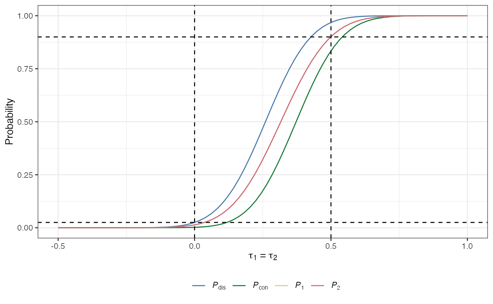
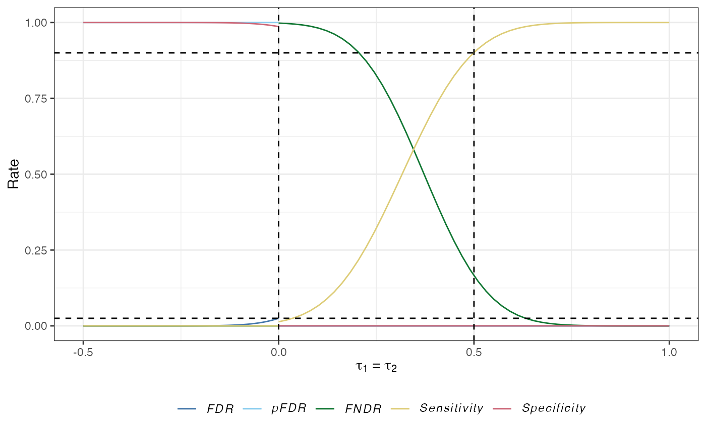
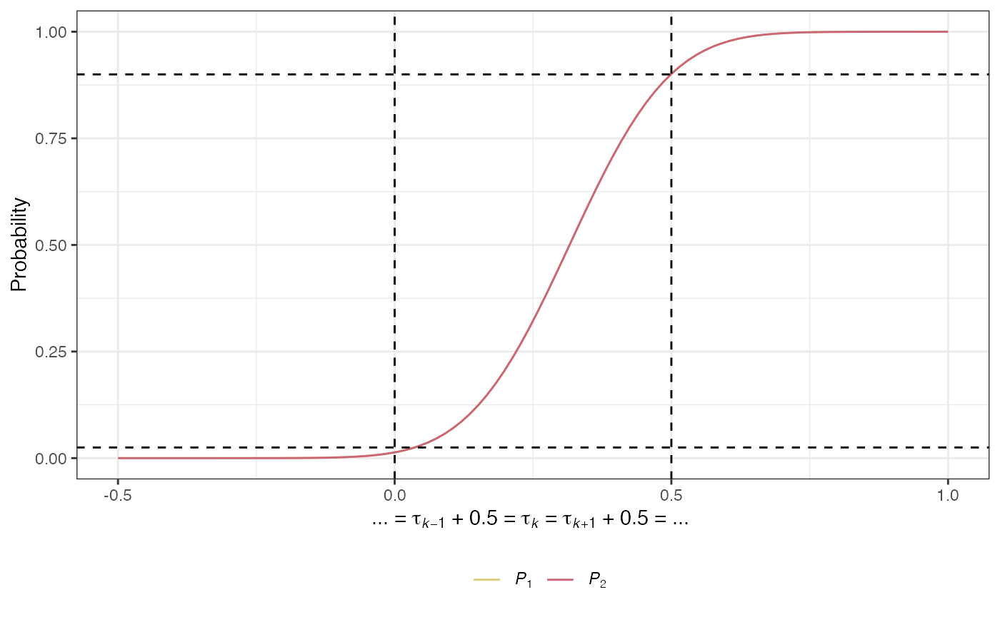
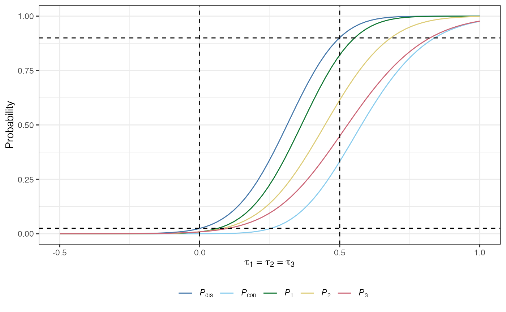
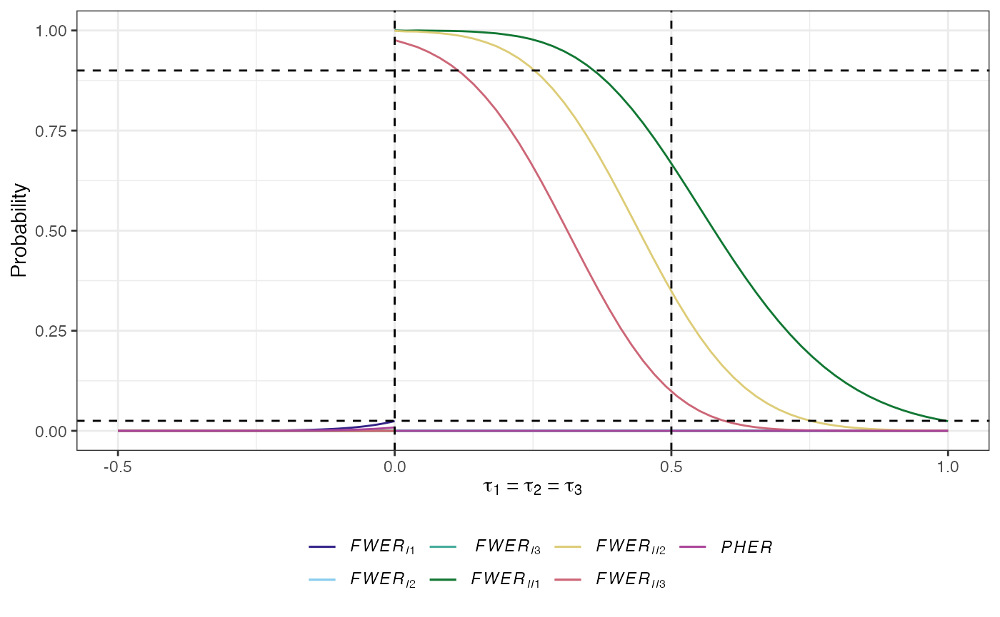
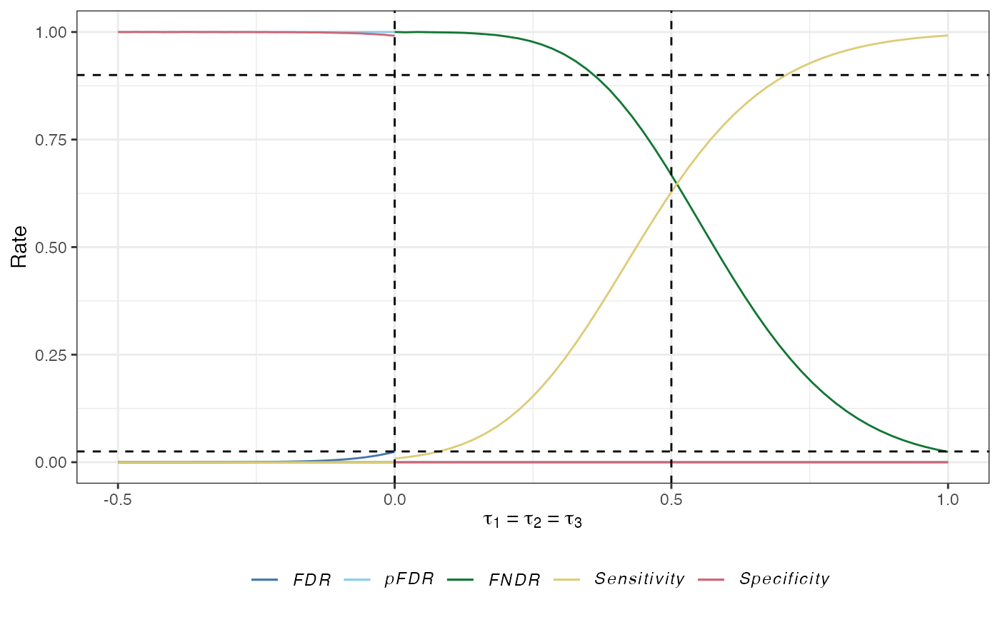
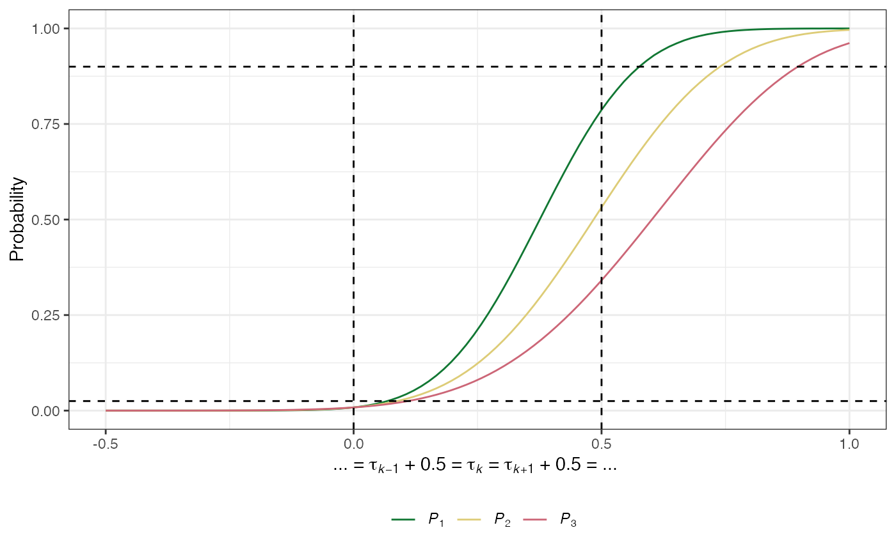

Single-stage multi-arm clinical trials
Michael J. Grayling, Newcastle University (michael.grayling@newcastle.ac.uk)
13/10/2020
Source:vignettes/single_stage.Rmd
single_stage.Rmd1. Introduction
multiarm provides functions to assist with the design of single- and multi-stage multi-arm clinical trials. This vignette describes the functionality available for single-stage designs. As will be discussed, the available functions allow for sample size determination, trial simulation, analytical operating characteristic calculation, and the production of several informative plots.
Note that an R Shiny graphical user interface is also available for designing single-stage trials; it can be accessed within R using multiarm::gui(), or online at https://mjgrayling.shinyapps.io/multiarm. Additional information on this app can be found in Grayling and Wason (2020).
This vignette will proceed by first precisely detailing the type of (single-stage) trial designs multiarm supports. Each of the available relevant functions will then be described, before several examples and useful further information is provided.
2. (Single-stage) multi-arm clinical trials
2.1. Design setting
multiarm supports the design of single-stage multi-arm clinical trials that use a many-to-one design. That is, a design where a single shared control treatment arm is compared in a pairwise manner to some number of experimental treatment arms, following the accrual of outcome data from a specified number of patients on each arm.
More formally, it supposes that outcomes \(X_{ik}\) will be accrued from patients \(i\in\{1,\dots,n_k\}\) on treatment arms \(k\in\{0,\dots,K\}\). In Section 2.6, more information on the precise types of outcome that are currently supported is provided. Next, specifying that arm \(k=0\) corresponds to the shared control arm, and arms \(k\in\{1,\dots,K\}\) to the experimental arms, the hypotheses of interest are assumed to be: \[ H_k\ :\ \tau_k \le 0,\ \ k\in\{1,\dots,K\}.\] Here, \(\tau_k\) corresponds to a treatment effect for experimental arm \(k\in\{1,\dots,K\}\), relative to the control arm. Thus, we test whether the treatment effects are negative, hoping that they will be positive (i.e., we assume positive \(\tau_k\) corresponds to patient benefit). Later, for brevity, we will make use of the notation \(\boldsymbol{\tau}=(\tau_1,\dots,\tau_K)^\top\in\mathbb{R}^K\). We will also make reference to the global null hypothesis, \(H_G\), which we define to be the scenario with \(\tau_1=\cdots=\tau_K=0\).
To test hypothesis \(H_k\), we assume that a Wald test statistic, \(z_k\), is computed: \[ z_k = \frac{\hat{\tau}_k}{\sqrt{\text{Var}(\hat{\tau}_k)}} = \hat{\tau}_kI_k^{1/2},\ \ k\in\{1,\dots,K\}. \] In what follows, we will use the notation \(\boldsymbol{z}_k=(z_1,\dots,z_k)^\top\in\mathbb{R}^k\). Then, multiarm supports single-stage design in certain scenarios where \(\boldsymbol{Z}_k\), the random pre-trial value of \(\boldsymbol{z}_k\), has (at least asymptotically) a \(k\)-dimensional multivariate normal (MVN) distribution, with: \[\begin{align} \mathbb{E}(Z_l) &= \tau_lI_l^{1/2},\ l=1,\dots,k,\\ \text{Cov}(Z_{l},Z_{l}) &= 1,\ l\in\{1,\dots,k\},\\ \text{Cov}(Z_{l_1},Z_{l_2}) &= I_{l_1}^{1/2}I_{l_2}^{1/2}\text{Cov}(\tau_{l_1},\tau_{l_2}),\ l_1 \neq l_2,\ l_1,l_2\in\{1,\dots,k\}. \end{align}\] Ultimately, to test the hypotheses, \(\boldsymbol{z}_K\) is converted to a vector of \(p\)-values, \(\boldsymbol{p}=(p_1,\dots,p_K)^\top\in[0,1]^K\), via: \[ p_k = 1 - \Phi_1(z_k,0,1),\ \ k\in\{1,\dots,K\}.\] Here, \(\Phi_n\{(a_1,\dots,a_n)^\top,\boldsymbol{\lambda},\Sigma\}\) is the cumulative distribution function of an \(n\)-dimensional MVN distribution, with mean \(\boldsymbol{\lambda}\) and covariance matrix \(\Sigma\). Precisely: \[ \Phi_n\{(a_1,\dots,a_n)^\top,\boldsymbol{\lambda},\Sigma\} = \int_{-\infty}^{a_1}\dots\int_{-\infty}^{a_n}\phi_n\{\boldsymbol{x},\boldsymbol{\lambda},\Sigma\}\mathrm{d}x_n\dots\mathrm{d}x_1, \] where \(\phi_n\{\boldsymbol{x},\boldsymbol{\lambda},\Sigma\}\) is the probability density function of an \(n\)-dimensional MVN distribution with mean \(\boldsymbol{\lambda}\) and covariance matrix \(\Sigma\), evaluated at vector \(\boldsymbol{x}=(x_1,\dots,x_n)^\top\).
Finally, to determine whether to reject each null hypothesis, the \(p_k\) are compared to a set of significance thresholds, which are specified based on a chosen MCC (see below), in combination with a nominated significance level \(\alpha\in(0,1)\).
With the above, the principal goal of multiarm is to provide a set of functions that:
- help choose the significance thresholds against which the \(p_k\) are compared;
- help make choices on appropriate values for the \(n_k\), \(k\in\{0,\dots,K\}\), to achieve some desired level of statistical power (see Section 2.3);
- help evaluate the statistical characteristics of a chosen design.
Before we describe the currently supported MCCs however, we will first describe the operating characteristics that can be evaluated by multiarm.
2.2. Operating characteristics
multiarm supports the evaluation of a wide selection of statistical operating characteristics that may be of interest when choosing a multi-arm trial design. To understand how these are mathematically calculated, it is useful to summarise the results of the trial, in terms of the outcome for each of the \(K\) hypotheses, using a small table:
| Reject | Do not reject | |
|---|---|---|
| True null | \(A\) | \(B\) |
| False null | \(C\) | \(D\) |
With this, multiarm can compute the following quantities for any nominated multi-arm design scenario and set of treatment effects (that is, the quantities are conditional on specification of various design factors; we omit this conditioning for brevity):
The conjunctive power: The probability that all of the null hypotheses are rejected, irrespective of whether they are true or false: \[ P_\text{con}(\boldsymbol{\tau}) = \mathbb{P}(A+C = K \mid \boldsymbol{\tau}).\]
The disjunctive power: The probability that at least one of the null hypotheses is rejected, irrespective of whether they are true or false: \[ P_\text{dis}(\boldsymbol{\tau}) = \mathbb{P}(A+C > 0 \mid \boldsymbol{\tau}).\]
The marginal power: For arm \(k\in\{1,\dots,K\}\) is the probability that \(H_k\) is rejected: \[ P_k(\boldsymbol{\tau}) = \mathbb{P}(\text{Reject }H_k \mid \boldsymbol{\tau}).\]
The per-hypothesis error-rate (PHER): The expected value of the number of type-I errors divided by the number of hypotheses: \[ PHER(\boldsymbol{\tau}) = \frac{\mathbb{E}(A \mid \boldsymbol{\tau})}{K}.\]
The \(a\)-generalised type-I familywise error-rate: The probability that at least \(a\in\{1,\dots,K\}\) type-I errors are made: \[ FWER_{Ia}(\boldsymbol{\tau}) = \mathbb{P}(A \ge a \mid \boldsymbol{\tau}).\] Note that \(FWER_{I1}\) is the conventional familywise error-rate (\(FWER\)); the probability of making at least one type-I error.
The \(d\)-generalised type-II familywise error-rate: The probability that at least \(d\in\{1,\dots,K\}\) type-II errors are made: \[ FWER_{IId}(\boldsymbol{\tau}) = \mathbb{P}(D \ge d \mid \boldsymbol{\tau}).\]
The false discovery rate (\(FDR\)): The expected proportion of type-I errors amongst the rejected hypotheses: \[ FDR(\boldsymbol{\tau}) = \mathbb{E}\left\{\frac{A}{A+C} \mid A+C>0,\boldsymbol{\tau}\right\}\mathbb{P}(A+C>0 \mid \boldsymbol{\tau}). \]
The false non-discovery rate (\(FNDR\)): The expected proportion of type-II errors amongst the hypotheses that are not rejected: \[ FNDR(\boldsymbol{\tau})= \mathbb{E}\left\{\frac{D}{B+D} \mid B+D>0,\boldsymbol{\tau}\right\}\mathbb{P}(B+D>0 \mid \boldsymbol{\tau}). \]
The positive false discovery rate: The rate that rejections are type-I errors: \[ pFDR(\boldsymbol{\tau}) = \mathbb{E}\left\{\frac{D}{B+D} \mid B+D>0,\boldsymbol{\tau}\right\}. \]
The sensitivity: The expected proportion of the number of correct rejections of the hypotheses to the number of false null hypotheses: \[ Sensitivity(\boldsymbol{\tau}) = \mathbb{E}\left\{\frac{C}{C+D} \mid \boldsymbol{\tau}\right\}. \]
The specificity: The expected proportion of the number of correctly not rejected hypotheses to the number of true null hypotheses: \[ Specificity(\boldsymbol{\tau}) = \mathbb{E}\left\{\frac{B}{A+B} \mid \boldsymbol{\tau}\right\}. \]
2.3.1 Per-hypothesis error-rate control
The most simple possible solution for selecting the significance thresholds against which to compare the \(p_k\), is to compare each to the chosen significance level \(\alpha\). That is, to reject \(H_k\) for \(k\in\{1,\dots,K\}\) if \(p_k \le \alpha\). This controls the PHER to \(\alpha\), and corresponds to not utilising a so-called MCC. In multiarm, this approach can be chosen by setting correction = "none".
A potential problem with this, however, can be that the statistical operating characteristics of the resulting design may not be desirable (e.g., in terms of \(FWER_{I1}\)). For this reason, in general one may wish to make use of a MCC. Currently, multiarm supports the use of a variety of such MCCs, which aim to control either:
- the conventional FWER, \(FWER_{I1}\) (with these techniques sub-divided into single-step, step-down, and step-up procedures) or;
- the FDR.
2.3.2. Single-step family-wise error-rate control
These procedures test each of the \(H_k\) against a common significance level, \(\gamma\in(0,1)\) say, rejecting \(H_k\) if \(p_k \le \gamma\). The currently supported single-step procedures are:
-
Bonferroni’s correction: This sets \(\gamma = \alpha/K\). It can be chosen by setting
correction = "bonferroni". -
Sidak’s correction: This sets \(\gamma = 1 - (1 - \alpha)^{1/K}\). It can be chosen by setting
correction = "sidak". -
Dunnett’s correction: This sets \(\gamma = 1 - \Phi_1\{z_D,0,1\}\), where \(z_\text{D}\) is the solution of the following equation \[ \alpha = 1 - \Phi_K\{(z_D,\dots,z_D)^\top,\boldsymbol{0}_K,\text{Cov}(\boldsymbol{Z}_K)\}, \] with \(\boldsymbol{0}_n=(0,\dots,0)^\top\in\mathbb{R}^n\) an \(n\)-dimensional vector of zeroes. It can be chosen by setting
correction = "dunnett".
Note that each of the above specify a \(\gamma\) such that the maximum probability of incorrectly rejecting at least one of the null hypotheses \(H_k\), \(k\in\{1,\dots,K\}\), over all possible values of \(\boldsymbol{\tau}\in\mathbb{R}^K\) is at most \(\alpha\). This is referred to as strong control of \(FWER_{I1}\).
2.3.3. Step-down family-wise error-rate control
These procedures work by first ranking the \(p\)-values from smallest to largest. We will refer to these ranked \(p\)-values by \(p_{(1)},\dots,p_{(K)}\), with associated hypotheses \(H_{(1)},\dots,H_{(K)}\). The \(p_{(k)}\) are compared to a vector of significance levels \(\boldsymbol{\gamma}=(\gamma_1,\dots,\gamma_K)\in(0,1)^K\). Precisely, the maximal index \(k\) such that \(p_{(k)}>\gamma_k\) is identified, and then \(H_{(1)},\dots,H_{(k-1)}\) are rejected and \(H_{(k)},\dots,H_{(K)}\) are not rejected. If \(k=1\) then we do not reject any of the null hypotheses, and if no such \(k\) exists then we reject all of the null hypotheses. The currently supported step-down procedures are:
-
Holm-Bonferroni correction: This sets \(\gamma_k=\alpha/(K+1-k)\). It can be chosen by setting
correction = "holm_bonferroni". -
Holm-Sidak correction: This sets \(\gamma_k = 1 - (1 - \alpha)^{1/(K+1-k)}\). It can be chosen by setting
correction = "holm_sidak". -
Step-down Dunnett correction: This can only currently be used when the \(Cov(Z_{k_1},Z_{k_2})\) are equal for all \(k_1\neq k_2,\ k_1,k_2\in\{1,\dots,K\}\). In this case, it sets \(\gamma_k = 1 - \Phi\{z_{Dk}\}\), where \(z_{Dk}\) is the solution to \[ \alpha = 1 - \Phi_{K+1-k}\{(z_{Dk},\dots,z_{Dk})^\top,\boldsymbol{0}_{K+1-k},\text{Cov}(\boldsymbol{Z}_{K+1-k})\}. \] It can be chosen by setting
correction = "step_down_dunnett".
Note that each of the above methods provide strong control of \(FWER_{I1}\).
2.3.4. Step-up family-wise error-rate control
These procedures also work by first ranking the \(p\)-values from smallest to largest, and utilise a vector of significance levels \(\boldsymbol{\gamma}\). However, here, the largest \(k\) such that \(p_{(k)} \le \gamma_k\) is identified. Then, we reject the hypotheses \(H_{(1)},\dots,H_{(k)}\), and do not reject \(H_{(k+1)},\dots,H_{(K)}\). Currently, one such method is supported:
-
Hochberg’s correction: This sets \(\gamma_k=\alpha/(K+1-k)\). It can be chosen by setting
correction = "hochberg".
This method also provides strong control of \(FWER_{I1}\).
2.3.5. False discovery rate control
Whilst (most of) the above methods control \(FWER_{I1}\) in the strong sense, it may be of interest instead to control the FDR. Currently, two methods that will control the FDR to at most \(\alpha\) over all possible \(\boldsymbol{\tau}\in\mathbb{R}^K\) are supported. They function in the same way as the step-up FWER control MCCs discussed above, but with:
-
Benjamini-Hochberg correction: This sets \(\gamma_k=k\alpha/K\). It can be chosen by setting
correction = "benjamini_hochberg". -
Benjamini-Yekutieli correction: This sets: \[\gamma_k=\frac{k\alpha}{K\left(1 + \frac{1}{2} + \dots + \frac{1}{K}\right)}.\] It can be chosen by setting
correction = "benjamini_yekutieli".
2.4. Sample size determination
Powering a multi-arm trial is complex. Consequently, multiarm supports design determination for a variety of types of power. It requires values for interesting and uninteresting treatment effects to be specified, \(\delta_1\in\mathbb{R}^+\) and \(\delta_0\in(-\infty,\delta_1)\) respectively. With this, the following definitions are used:
- The global alternative hypothesis, \(H_A\), is given by: \[\tau_1=\cdots=\tau_K=\delta_1.\]
- The least favourable configuration for experimental arm \(k=1,\dots,K\), \(LFC_k\), is given by: \[\tau_k=\delta_1,\ \tau_1=\cdots=\tau_{k-1}=\tau_{k+1}=\cdots=\tau_K=\delta_0.\] For brevity, we will refer to the \(\boldsymbol{\tau}\) implied by \(LFC_k\) as \(\boldsymbol{\tau} = \boldsymbol{\theta}_k\).
Then, the sample size required by a design to control the following types of power to a specified level \(1-\beta\) can be determined (chosen using the arguments beta and power):
-
Conjunctive power under the global alternative hypothesis: Ensure that \(P_\text{con}\{(\delta_1,\dots,\delta_1)^\top\} \ge 1 - \beta\). It can be chosen by setting
power = "conjunctive". -
Disjunctive power under the global alternative hypothesis: Ensure that \(P_\text{dis}\{(\delta_1,\dots,\delta_1)^\top\} \ge 1 - \beta\). It can be chosen by setting
power = "disjunctive". -
Minimum marginal power under the least favourable configurations: Ensure that \(\min_{k\in\{1,\dots,K\}}P_k(\boldsymbol{\theta}_k) \ge 1 - \beta\). It can be chosen by setting
power = "marginal".
2.5. Allocation ratios
One of the primary goals of multiarm is to aid the choice of \(\boldsymbol{n}=(n_0,\dots,n_K)\). Currently, multiarm supports the determination of \(\boldsymbol{n}\) by identifying a suitable \(n_0\), and then setting \(n_k=r_kn_0\) for \(k\in\{1,\dots,K\}\), with \(\boldsymbol{r}=(r_1,\dots,r_K)\in(0,\infty)^K\).
In turn, it allows \(\boldsymbol{r}\) to be specified (via the argument ratio) in a variety of ways. It can be specified explicitly as a numeric vector, or alternatively can be determined in an optimal manner. Currently, multiarm supports the determination of \(\boldsymbol{r}\) for the following optimality criteria:
- \(A\)-optimality: Minimizes the trace of the inverse of the information matrix of the design. This results in the minimization of the average variance of the treatment effect estimates.
- \(D\)-optimality: Maximizes the determinant of the information matrix of the design. This results in the minimization of the volume of the confidence ellipsoid for the treatment effect estimates.
- \(E\)-optimality: Maximizes the minimum eigenvalue of the information matrix. This results in the minimization of the maximum variance of the treatment effect estimates.
The optimal allocation ratios are identified in the app using available closed-form solutions were possible, otherwise non-linear programming is employed.
2.6. Supported outcome variables
2.6.1. Normally distributed outcome variables
Currently, multiarm supports multi-arm trial design for scenarios in which the outcome variables are assumed to be either normally or Bernoulli distributed.
Precisely, for the normal case, it assumes that \(X_{ik}\sim N(\mu_k,\sigma_k^2)\), and that \(\sigma_k^2\) is known for \(k\in\{0,\dots,K\}\). Then, for each \(k\in\{1,\dots,K\}\):
\[\begin{align} \tau_k &= \mu_k-\mu_0,\\ \hat{\tau}_k &= \frac{1}{n_k}\sum_{l=1}^{n_k}x_{ik} - \frac{1}{n_0}\sum_{l=1}^{n_0}x_{i0},\\ I_{k} &= \frac{1}{\frac{\sigma_0^2}{n_0} + \frac{\sigma_k^2}{n_k}}. \end{align}\]
Furthermore, \(\boldsymbol{Z}_K\) has a multivariate normal distribution, and thus the operating characteristics can be computed exactly using multivariate normal integration. Additionally, the distribution of \(\boldsymbol{Z}_K\) does not depend upon the values of the \(\mu_k\), \(k\in\{0,\dots,K\}\). Consequently, these parameters play no part in the inputs or outputs of functions in multiarm. In contrast, where relevant, the functions within multiarm request values for the \(\sigma_k\) via the argument sigma.
Functions with names ending in _ss_norm support single-stage designs in which the outcome variables are assumed to be normally distributed.
2.6.2. Bernoulli distributed outcome variables
In this case, \(X_{ik}\sim Bern(\pi_k)\) for response rates \(\pi_k\), and for each \(k\in\{1,\dots,K\}\):
\[\begin{align} \tau_k &= \pi_k-\pi_0,\\ \hat{\tau}_k &= \frac{1}{n_k}\sum_{l=1}^{n_k}x_{ik} - \frac{1}{n_0}\sum_{l=1}^{n_0}x_{i0},\\ I_{k} &= \frac{1}{\frac{\pi_0(1 - \pi_0)}{n_0} + \frac{\pi_k(1 - \pi_k)}{n_k}}. \end{align}\]
Thus, a problem for design determination becomes that the information levels are dependent on the unknown response rates. In practice, this is handled by setting:
\[ I_k = \frac{1}{\frac{\hat{\pi}_0(1 - \hat{\pi}_0)}{n_0} + \frac{\hat{\pi}_k(1 - \hat{\pi}_k)}{n_k}},\] for \(\hat{\pi}_k = \sum_{l=1}^{n_k}x_{ik}/n_k\), \(k\in\{0,\dots,K\}\). This is the assumption made where relevant in multiarm. With this, \(\boldsymbol{Z}_K\) is only asymptotically multivariate normal. Thus, in general it is important to validate operating characteristics evaluated using multivariate normal integration via simulation.
In addition, note that the above problem also means that the operating characterstics under \(HG\), \(HA\), and the \(LFC_k\) are not unique without further restriction. Thus, to achieve uniqueness, multiarm requires a value be specified for \(\pi_0\) (pi0) for use in the definition of these scenarios. And for this reason, the inputs and outputs of functions supporting Bernoulli outcomes make no reference to the \(\tau_k\), and work instead directly in terms of the \(\pi_k\). Finally, it also means that to determine \(A\)-, \(D\)-, or \(E\)-optimised allocation ratios, a specific set of values for for the \(\pi_k\) must be assumed (see ratio_scenario in des_ss_bern()).
In this case, we should also ensure that \(\delta_1\in(0,1)\) and \(\delta_0\in(-\pi_0,\delta_1)\), for the assumed value of \(\pi_0\), since \(\pi_k\in[0,1]\) for \(k\in\{1,\dots,K\}\).
Functions with names ending in _ss_bern support single-stage designs in which the outcome variables are assumed to be Bernoulli distributed.
3. Functions
3.1. des_ss_bern() and des_ss_norm()
des_ss_bern() and des_ss_norm() are amongs the primary functions within multiarm. They are used to determine single-stage multi-arm clinical trial designs attaining a desired level of a specified type of power, for normally and Bernoulli distributed outcomes respectively.
3.3. build_ss_bern() and build_ss_norm()
des_ss_bern() and des_ss_norm() search for designs based upon the chosen input parameters. However, in certain circumstances there may be a specific design that is of interest. build_ss_bern() and build_ss_norm() can be used to construct such designs, specifically for subsequent use with the other functions available in multiarm.
3.4. plot.multiarm_des_ss_bern() and plot.multiarm_des_ss_norm()
multiarm can produce a variety of plots for the outputs from build_ss_bern(), build_ss_norm(), des_ss_bern(), and des_ss_norm() via the S3 functions plot.multiarm_des_ss_bern() and plot.multiarm_des_ss_norm().
3.5. opchar_ss_bern() and opchar_ss_norm()
Whilst build_ss_bern(), build_ss_norm(), des_ss_bern(), and des_ss_norm() return a small summary of the statistical operating characteristics of a design, it may occasionally be of interest to evaluate the operating characteristics of a design in a wider range of settings. opchar_ss_bern() and opchar_ss_norm() are designed for this purpose.
3.6. sim_ss_bern() and sim_ss_norm()
Each of the functions above rely upon multivariate normal integration for operating characteristic evaluation. In certain circumstances, most likely when either (a) \(K\) is large or (b) analytical evaluations need to be validated, recourse to simulation is useful. sim_ss_bern() and sim_ss_norm() are designed to be helpful in these settings.
4. Examples
4.1. Example 1
We demonstrate the basic functionality provided in multiarm. First, identify a design using des_ss_norm():
library(multiarm) #> --------------------------------------------------------------------- #> multiarm: Design of single- and multi-stage multi-arm clinical trials #> --------------------------------------------------------------------- #> #> v.0.11: For an overview of the package's functionality enter: ?multiarm #> #> For news on the latest updates enter: news(package = "multiarm") des <- des_ss_norm(integer = TRUE)
Note that the argument integer has been used because we will make a call to sim_ss_norm() later on.
We can then plot power curves with plot.multiarm_des_ss_norm() as follows:
plot(des)

#> Warning: The `x` argument of `as_tibble.matrix()` must have unique column names if `.name_repair` is omitted as of tibble 2.0.0.
#> Using compatibility `.name_repair`.
#> This warning is displayed once every 8 hours.
#> Call `lifecycle::last_warnings()` to see where this warning was generated.
des_ss_norm() contains a summary of the operating characteristics of the identified design:
des$opchar #> # A tibble: 4 x 16 #> tau1 tau2 Pdis Pcon P1 P2 FWERI1 FWERI2 FWERII1 FWERII2 #> <dbl> <dbl> <dbl> <dbl> <dbl> <dbl> <dbl> <dbl> <dbl> <dbl> #> 1 0 0 0.0250 0.00196 0.0135 0.0135 0.0250 0.00196 0 0 #> 2 0.5 0.5 0.968 0.834 0.901 0.901 0 0 0.166 0.0319 #> 3 0.5 0 0.901 0.0135 0.901 0.0135 0.0135 0 0.0989 0 #> 4 0 0.5 0.901 0.0135 0.0135 0.901 0.0135 0 0.0989 0 #> # … with 6 more variables: PHER <dbl>, FDR <dbl>, pFDR <dbl>, FNDR <dbl>, #> # Sens <dbl>, Spec <dbl>
We can validate these using sim_ss_norm() with:
sim_ss_norm(des)$sim #> # A tibble: 4 x 16 #> tau1 tau2 Pdis Pcon P1 P2 FWERI1 FWERI2 FWERII1 FWERII2 #> <dbl> <dbl> <dbl> <dbl> <dbl> <dbl> <dbl> <dbl> <dbl> <dbl> #> 1 0 0 0.0252 0.00194 0.0136 0.0136 0.0252 0.00194 0 0 #> 2 0.5 0.5 0.969 0.833 0.901 0.902 0 0 0.167 0.0310 #> 3 0.5 0 0.901 0.0137 0.901 0.0137 0.0137 0 0.0987 0 #> 4 0 0.5 0.900 0.0127 0.0127 0.900 0.0127 0 0.0998 0 #> # … with 6 more variables: PHER <dbl>, FDR <dbl>, pFDR <dbl>, FNDR <dbl>, #> # Sens <dbl>, Spec <dbl>
4.2. Example 2
Now, lets make use of some of the additional functionality from multiarm.
First, let’s find a design for a scenario with \(K=3\), using the Holm-Bonferroni correction, desiring to control the disjunctive power, choosing the allocation ratios for \(D\)-optimality, in a scenario where the standard deviations differ across the arms:
des <- des_ss_norm(K = 3, sigma = c(0.5, 1, 1.5, 2), ratio = "D", correction = "holm_bonferroni", power = "disjunctive", integer = TRUE)
Thus the total required sample size by the design is:
des$N #> [1] 230
And, the allocation ratios are:
des$ratio #> [1] 1.705882 1.970588 2.088235
Next, note that the operating characeristics of the truly optimal design are:
des$opchar #> # A tibble: 5 x 20 #> tau1 tau2 tau3 Pdis Pcon P1 P2 P3 FWERI1 FWERI2 #> <dbl> <dbl> <dbl> <dbl> <dbl> <dbl> <dbl> <dbl> <dbl> <dbl> #> 1 0 0 0 0.0243 9.65e-5 0.00856 0.00854 0.00852 0.0243 1.22e-3 #> 2 0.5 0.5 0.5 0.901 3.32e-1 0.822 0.614 0.449 0 0. #> 3 0.5 0 0 0.788 9.67e-4 0.787 0.0124 0.0124 0.0238 9.71e-4 #> 4 0 0.5 0 0.535 1.03e-3 0.0117 0.532 0.0114 0.0221 1.07e-3 #> 5 0 0 0.5 0.348 9.96e-4 0.0108 0.0106 0.341 0.0203 1.12e-3 #> # … with 10 more variables: FWERI3 <dbl>, FWERII1 <dbl>, FWERII2 <dbl>, #> # FWERII3 <dbl>, PHER <dbl>, FDR <dbl>, pFDR <dbl>, FNDR <dbl>, Sens <dbl>, #> # Spec <dbl>
We can validate these with:
sim_ss_norm(des)$sim #> # A tibble: 5 x 20 #> tau1 tau2 tau3 Pdis Pcon P1 P2 P3 FWERI1 FWERI2 #> <dbl> <dbl> <dbl> <dbl> <dbl> <dbl> <dbl> <dbl> <dbl> <dbl> #> 1 0 0 0 0.0245 0.00011 0.00825 0.00864 0.00869 0.0245 0.00101 #> 2 0.5 0.5 0.5 0.901 0.331 0.820 0.613 0.448 0 0 #> 3 0.5 0 0 0.790 0.00109 0.788 0.0128 0.0129 0.0246 0.00109 #> 4 0 0.5 0 0.535 0.00094 0.0115 0.531 0.0116 0.0221 0.00097 #> 5 0 0 0.5 0.345 0.00095 0.0104 0.0100 0.339 0.0194 0.00109 #> # … with 10 more variables: FWERI3 <dbl>, FWERII1 <dbl>, FWERII2 <dbl>, #> # FWERII3 <dbl>, PHER <dbl>, FDR <dbl>, pFDR <dbl>, FNDR <dbl>, Sens <dbl>, #> # Spec <dbl>
Or recreate them with opchar_ss_norm() via:
opchar_ss_norm(des)$opchar #> # A tibble: 5 x 20 #> tau1 tau2 tau3 Pdis Pcon P1 P2 P3 FWERI1 FWERI2 #> <dbl> <dbl> <dbl> <dbl> <dbl> <dbl> <dbl> <dbl> <dbl> <dbl> #> 1 0 0 0 0.0243 9.64e-5 0.00856 0.00854 0.00852 0.0243 1.22e-3 #> 2 0.5 0.5 0.5 0.902 3.32e-1 0.822 0.614 0.449 0 0. #> 3 0.5 0 0 0.788 9.67e-4 0.787 0.0124 0.0124 0.0238 9.71e-4 #> 4 0 0.5 0 0.535 1.03e-3 0.0117 0.532 0.0114 0.0221 1.07e-3 #> 5 0 0 0.5 0.348 9.96e-4 0.0108 0.0106 0.341 0.0203 1.12e-3 #> # … with 10 more variables: FWERI3 <dbl>, FWERII1 <dbl>, FWERII2 <dbl>, #> # FWERII3 <dbl>, PHER <dbl>, FDR <dbl>, pFDR <dbl>, FNDR <dbl>, Sens <dbl>, #> # Spec <dbl>
And, as earlier, we can produce power-curve plots with:
plot(des)

References
Grayling MJ, Wason JMS (2020) A web application for the design of multi-arm clinical trials. BMC Cancer 20:80. DOI: 10.1186/s12885-020-6525-0. PMID: 32005187.